Seamless Support for Ground Transportation Operations

What We Offer
GroundOps provides end-to-end support for ground transportation operations. From reservations and dispatch to billing and reporting, we streamline your workflow so you can focus on delivering exceptional service every day.
-
Reservations Coordinator
24/7 booking handling via phone, web & email — fully white-labeled. VIP guest handling, confirmations & special requests. Real-time availability & multi-channel booking
-
Dispatch Coordinator
Live monitoring, flight-aware updates and fast exception handling. Flight-aware ETA adjustments & reroutes. Driver / partner communications & OTP verification
-
After-Hours Desk
Cross-trained agents for overnight and low-volume periods. Overnight triage & escalation playbooks. Seamless handoffs to day team
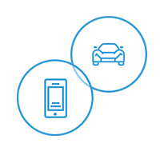 -
Accounting & Billing
Invoice creation, disputes and month-end reconciliations. Invoice generation & automation. Dispute management & settlement tracking
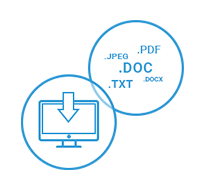
About Our Company
GroundOps, a division of GroundWidgets, specializes in delivering high-quality operational support services to the ground transportation industry. Our dedicated team assists operators with reservations, dispatch coordination, billing, driver monitoring, and after-hours coverage — ensuring seamless operations around the clock. As part of GroundWidgets, GroundOps combines industry expertise with a deep understanding of client needs to provide reliable, efficient, and professional service that helps transportation companies focus on what they do best — serving their passengers.
-
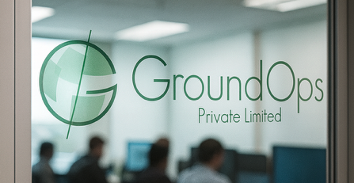
GroundOps is the dedicated service division of GroundWidgets, providing specialized operational support for the ground transportation industry. Our experienced team manages reservations, dispatch coordination, billing, driver monitoring, and after-hours coverage — ensuring smooth, uninterrupted operations 24/7. GroundOps helps transportation providers deliver reliability and service excellence while maintaining efficiency behind the scenes.
-
We understand that as a business, having trust and confidence in your technology provider is vital to the future growth and sustainability of your company. We strive to understand the needs and priorities of our users to enhance our business practices and develop the solutions that exceed their expectations. The team at GroundWidgets tackles complex business processes and develops applications to optimize these workflows to establish substantial improvements in efficiency while enhancing your end-user and customer experience.
-
GroundWidgets is an elite technology company driven and managed by founding pioneers and developers of the ground transportation industry. The company is exclusively focused on consultation and the development of modern applications harnessing the decades of generational experience and guidance by its founding leadership. GroundWidgets consults leading ground transportation companies on issues of technology, strategy, organization, and operations. We blend creative thinking and strategic planning with user feedback and expert knowledge to continually develop the next generation of integrated services that tackle the toughest challenges facing the ground transportation industry.
Driving the Future of Ground Transportation Service
At GroundOps, our vision is to create a smart, connected ecosystem that empowers operators, affiliates, and customers to manage every journey with efficiency, reliability, and complete transparency.
|
BackOffice Affiliate Network Bidirectional integration with backoffice systems View Details |
Merchant Processing Integrated backoffice credit card processor View Details |
Corporate/Agency Integration Automating reservations globally from travel agencies and corporate online booking tools! View Details |
|
Mobile Reservations Customer reservations app integrated with your backoffice system View Details |
Enterprise Office Software End to end solution for enterprise transportation companies View Details |
Chauffeur Communication Mobile app for chauffeur communications View Details |
|
Managed IT Services Dedicated technical support services for IT infrastructure View Details |
2-Way Voice Messaging Two way voice communication mobile app View Details |
Asset Protection Comprehensive online fleet management and safety monitoring View Details |
Our Products
Services offered by GroundOps include:
- Reservations Coordinator - 24 X 7
- Dispatch Coordinator - 24 X 7
- After-Hours Desk
- Accounting & Billing
Products & Services offered by GroundWidgets include:
- Back Office Software Systems - SantaCruz, ULS, LMS Gold
- Mobile Apps for Customers - GroundApp
- Mobile Solutions for Chauffeurs - GroundPad, GroundTalk
- Agency and Corporate Booking Connectivity - GroundSpan
- Vehicle and Driver Monitoring – GroundTrack, ELD eLog Solution
- Managed IT Services - GroundTech
-
End to End Solution for Enterprise Transportation Companies
SantaCruz is a next generation Reservation, Dispatch, and Accounting system used by large and mid-sized ground transportation companies. The platform was designed to lower costs by combining with the most widely used communication technologies including mobile phones and tablets, digital telephony systems, GPS, and the industry’s already established corporate booking tools to create a truly unique experience that optimizes and re-engineers all facets of your organization. SantaCruz leverages modern technologies that embrace open architectures and flexible work flow tools which enable the system to be fully customizable and feature rich.
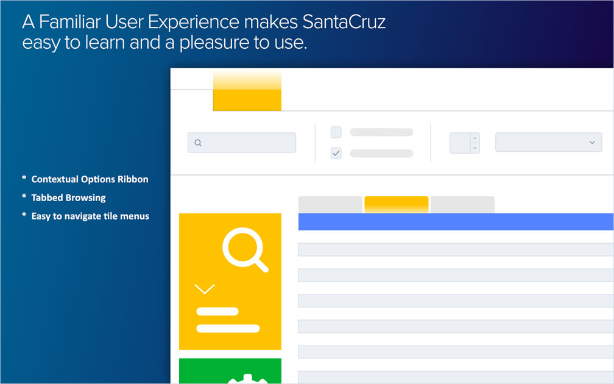- 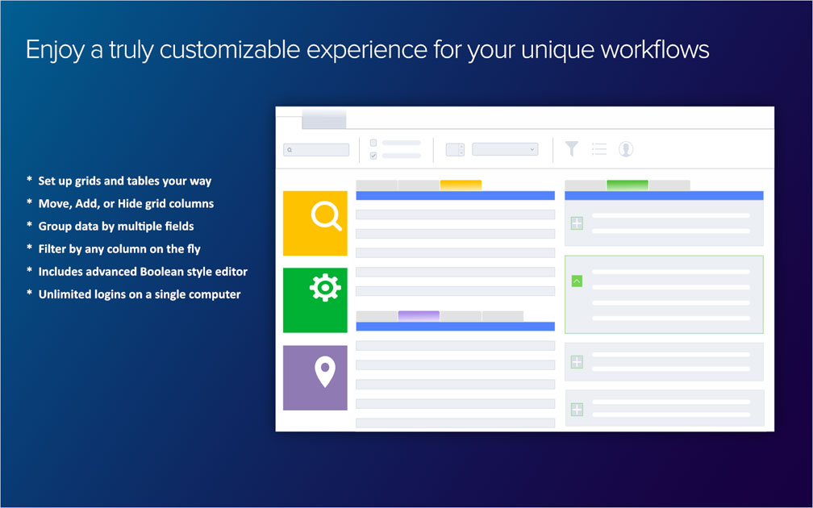
- 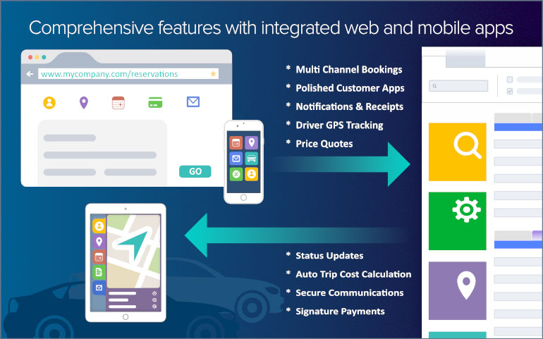
Ground Transportation companies are looking to innovative ways of reducing their overhead costs while staying ahead of the technology curve in a fast paced world.
With an integrated ground management solution, companies can drastically lower their order entry costs, simplify numerous dispatching tasks, reduce customer calls for chauffeur status with real time location data, and automate the billing and invoicing processes, which results in real savings of energy, time, and money.
Ground Management companies with integrated reservation, dispatch, and accounting platform run more efficiently, require fewer support staff, have fewer billing and customer service issues, and retain higher levels of customer satisfaction when compared with companies that are not fully integrated.Benefits to Your Customers – SantaCruz automates bookings from customers via web, mobile app, digital telephony, and via the widely used corporate booking tools of the industry. Your customers receives automated trip information in various formats include text message which reduces support calls and hold times. Your customers will know who their driver contacts are and when a driver is on location to pick them up. When your customers have reached their destination, they can digitally sign the driver’s tablet which can continue the automatic invoice and payment processes that can be configured in SantaCruz.
Benefits to Your Drivers – SantaCruz connects with GroundPad® app to allow drivers to receive reservations data and notifications from dispatch to their mobile devices. Drivers can log into zones, reply to dispatch messages using canned responses or manual replies, and have access to flight check, mapping, and name sign features. Once drivers are on a job they can they send status alerts back to dispatch every step of the way with tolls, stops, wait time, and parking being automatically calculated at the completion of the ride. SantaCruz can then trigger their next job based on automation rules that can also be based on location and fuel consumption.
Benefits to Your Dispatch – SantaCruz is built for customizable workflows aimed at greatly improving the efficiency of its heaviest users by giving them powerful filtering options and layout tools that enable them to keep track of every ride in the most intelligent way possible. Leveraging these core strengths with the automated advanced dispatching and integrated communications functions that SantaCruz offers continues to bring immense value in time and cost savings to its users.
Benefits to Your Operations – Companies on SantaCruz enjoy sleek and intuitive customer facing booking channels to maintain brand authenticity and improve sales retention. SantaCruz integrates with all the major corporate booking systems in the industry and is built to work with GroundWidget’s reservation exchange system called GroundXChange™ which helps drive customers to your business using the various tools of our integrated network. Affiliates who work through our ecosystem can send SantaCruz users live reservation data along with full pricing and ride closeout information automatically. The extensive data that transacts through SantaCruz from start to finish is aggregated into a competent accounting and payment module with extensive system reporting which is continuously refined and expanded as part of our value efforts to SantaCruz users.
Lower BackOffice Costs Powerful Workflows Extensive Integrations - Fully Paperless Capabilities
- Automated Telephony Features
- Automatic Dispatching
- Automated Affiliate Payments
- Mobile App Reservations
- Mobile Chauffeur Communications
- Enhanced GPS Tracking Capabilities
- Auto Batch Payment & Closeout
- Easy to use Microsoft Ribbon Style Interface
- Hide or Delete Grid Columns
- Sort and Filter Grid Columns
- Group By Multiple Columns
- Tabbed Browsing of Grids
- Touch Screen for On the Go
- Hundreds of Configuration Settings
- Mobile Customer Apps
- Mobile Driver App
- Website Booking Tools
- Corporate Booking Tools
- Agency Booking Tools
- Affiliate Network with GroundXChange
- Saturn Integration
- Powered by Google Maps
SantaCruz is the first Ground Transportation system to...
- Utilize Windows Touch Screen User Interface
- Allowing in-vehicle video and voice recording attachments to reservations
- Capture, store, and utilize GPS data throughout the trip and invoicing life cycle
- Trigger Vehicle Status Updates based on GPS events and locations
- TAPI Integration for automatic phone to customer lookup
- Offer real-time location address validation
- Utilize Multi-Language and Foreign Currency data formats
- Initiate Paperless Vouchering, Invoices & Payment Processing
- Provide a universal, system-wide Search function
- Significantly automate numerous Dispatch functions
- Introduce Auto Billing features
- Dynamic table structure to allow future changes to the data structure without GW involvement
- No limit on reservation stops, passengers, special instructions, or custom fields
- Moveable screen layouts for complete customization of data entry screens
- Integration with digital telephony with call recording to the system
- Use and tag video data with reservations
- Provide Customizable Dashboards
SantaCruz is built for high efficiency automation using modern and open technology platforms to enable a truly customizable experience that can be tailored to improve your operations in the most significant ways.
GroundWidgets End to End Platform…
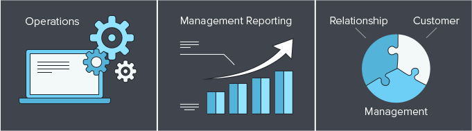... Automates Service Provider Processes Enterprise-Wide
Operations Management, Reservations, Dispatch Wireless dispatching using iPad and Android tablets Supply Chain Management, Affiliate Management Broad distribution capabilities beyond local operator’s reach Management Reporting,
Web ReportingAutomated management decision and support feedback loop with sales forecasts Customer Retention, TAPI, Frequent Rider Integrated real-time systems
Customer loyalty featuresAutomated Reservation Processing, Mobile/Web Apps, GDS Portals Personalized consumer web & mobile offerings
Operability with other travel industry value chain playersCustomer Accounting, Credit Card Processing Management reports for corporate accounts
Credit Card Reporting
Electronic invoicing
Asset Tracking GPS Tracking systems
Mobile Data Terminals
Vehicle Maintenance
Customer Service Incidents Incidents Tracking and Reporting
Service Level Monitoring -
Reduce Risk and Increase Driver Safety
Our GPS solution helps companies with small or large fleets significantly reduce their operating costs. You get information at your fingertips to improve fleet performance. The system provides you with minute-by-minute tracking when your vehicle or asset is moving and hour-by-hour tracking when your vehicle or asset is stopped.
GroundTrack™ is designed using a universal open API platform which can be easily integrated with any backoffice dispatching application.
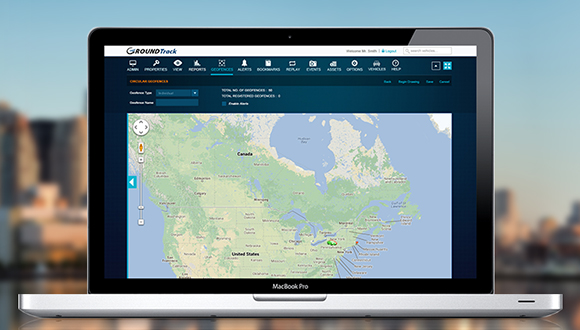- 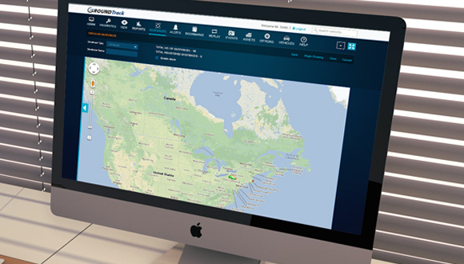
Ground Transportation companies are looking for cost effective ways to monitor their vehicles and chauffeurs from their dispatch center to maximize efficiency and ensure chauffeurs are complying with company policies and best practices.
Companies that manage to track their driver behavior increase the safety of their passengers, the dependability of their vehicles, and the overall efficiency of their company’s ground operation.
Ground Transportation companies that have a GPS tracking solution that provides them with essential driver data will reduce fuel costs, overtime driver costs, and prevents unauthorized vehicle usage.Benefits to Your Customers – When the quality of your drivers improves, the customer always benefits. Real-time alerts or summary notifications let you know if any unsafe driving behavior takes place. With a Safety Score across your whole fleet, you can best gauge how to assign drivers to your most important customers. In addition, with real time location for hazard events or vehicle breakdowns, you can quickly respond even before your customer calls your offices with complaints. This greatly improves customer satisfaction in the long run.
Benefits to Your Drivers – Having data of driver behavior helps you coach and train drivers to comply with your documented safety standards. By measuring their speed, harsh braking, rapid acceleration, and excess idling, your front-line employees become significantly better drivers. It also helps you to know who the truly best chauffeurs are in your fleet.
Benefits to Your Dispatch – With integration to SantaCruz or ULS backoffice systems, GroundTrack provides your dispatchers with the tools they need to monitor a driver's location along with traffic conditions to prevent delays and improve overall on-time performance. GroundTrack helps solve issues before they start and provides dispatchers with the ability to escalate an issue before it turns into an incident.
Benefits to Your Operations – GroundTrack data improve the performance of your company by providing fleet managers with the tools to assess the efficiency of your fleet. You'll be able to make decisions based on fuel consumption, traffic, wait time, and be able to reduce mileage for wear and tear on your vehicles which is also a factor in driver safety. These key indicators will you help you to greatly improve the quality of service your operations can achieve.
Improve Fleet Performance Improve Driver Safety Reduce Costs - Monitor Speed and Mileage
- Monitor idling and stop times
- Track Driver Hours
- Replay Route Behavior
- Realtime Alerts and Notifications
- Monitor harsh acceleration or braking
- Driver Safety Scores
- Use Data to Train your Drivers
- Improve Company Culture
- Track Fuel Consumption
- Cut down on unauthorized driving
- Manage based on Location Data
- Disables Stolen Vehicles
Real Time Location Reporting - Locate at a glance where every vehicle in your fleet is, right now! The map provides the dispatcher with the current location, status, speed, and heading for each vehicle. Unlike other GPS systems that only update every 2-5 minutes, GroundTrack™ management system typically updates every 1 minutes, or as often as every 10 seconds. With GroundTrack™, you are always in control of your fleet.
Mapping Technology - GroundTrack™ incorporates one of the world's fastest and up to data mapping technologies available. This allows GroundTrack™ to provide accurate and complete maps for the entire world. A universal mapping solution enables GroundTrack™ to deploy anywhere in the world.
Map Routing with Shortest & Quickest Path - GroundTrack™ has built in routing capabilities, allowing you to direct your chauffeurs to use the most efficient and cost-effective routes. Routing also enables you to route lost chauffeurs from their current position to customer locations.
Replay Vehicle Location History - Provides the dispatcher with a detailed location history replay of the vehicle, displaying a complete route for any vehicle within a specified time period with Stop Point and event information (for e.g. speed, stop times).
Customer / Job Site Locations (GeoFences) - GroundTrack™ allows you to create geofences (customer location areas) and have them displayed on the map and with reports. This service will provide you with a global view of your customers and the relative location of your fleet in real time and also can send alerts when a vehicle enters or exits a geofence location.
Business Intelligence Reports - With GroundTrack™ reporting, you have the tools necessary to cut operating costs, increase employee productivity and improve customer satisfaction. Detailed analysis of your assets and their respective productivity provides valuable insight for any business owner.
Real - Time Alerts & Notification - Be notified even when you don't have access to your system via text message or email immediately when unauthorized vehicle activities occur, such as:- Speeding
- Excessive Idling
- Unauthorized vehicle usage
- Geofence violation
- Side work
- Custom Vehicle Events and Monitoring
GroundTrack™ leverages state of the art Global Positioning technology providing fleet managers with a comprehensive asset tracking solution. The GroundTrack™ transponder provides real-time tracking of assets 24/7. Real-time alerts help you monitor chauffeur behavior resulting in improved efficiency and reduced idling. Full audit trail functionality lets you view and analyze historical information.
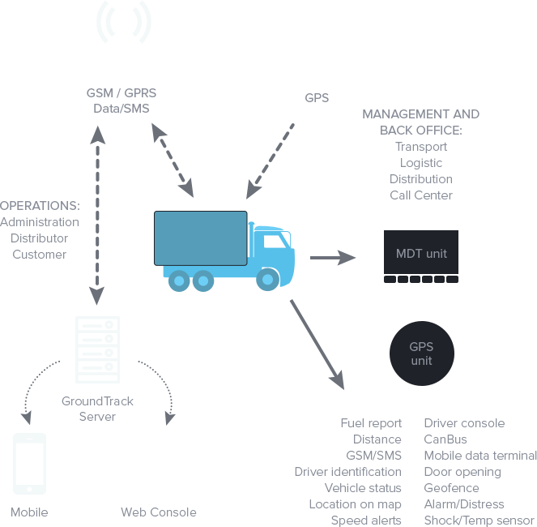
-
Mobile App for Chauffeur Communications
GroundWidgets has developed a solution that integrates with your backoffice system and offers an innovative approach to empower fleet dispatchers to communicate in real time with their chauffeurs in the field. GroundPad enables the chauffeur to receive reservation and related information directly onto their mobile device along with other critical dispatch communication. Enabling chauffeurs with real time two-way communications, such as specific pickup location details, turn by turn directions, flight status updates and important instructions reduces delays and puts you ahead.
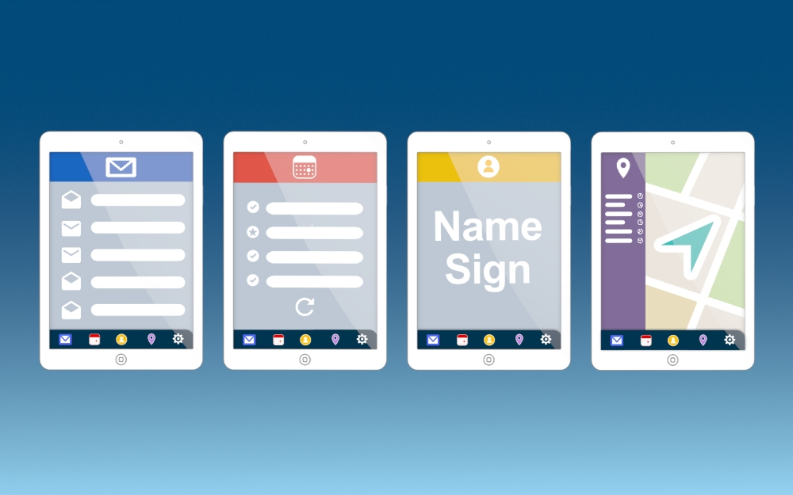Downloadable PDFGround Transportation Companies are looking for real-time status updates and chauffeur location data to quickly respond to customer dispatch calls, changes to pickup time or location, and tools to optimize their fleet and improve customer satisfaction.
In order to achieve the best in class communication between chauffeur and dispatch, a mobile app needs to integrate directly with your backoffice to keep your operations and drivers work together efficiently.
Companies with an integrated chauffeur communications app benefit by reducing their number of inbound calls, improved customer service handling, and better passenger visibility of driver data and status alerts. A chauffeur communications app that is truly integrated with your backoffice can reduce or eliminate paperwork by automating customer billing and payment.Improve Driver Performance - GroundPad provides drivers with all the ride details necessary to do a great job. The app has been designed to eliminate errors by requiring drivers to acknowledge specific instructions, stops, and extra service that the ride requires. Drivers will no longer need to carry paperwork thanks to the intuitive workflow and features of GroundPad. Drivers can even check the status of flights right from their device so they can ensure a prompt pickup. When drivers arrive to do a Meet & Greet, they can simply press a button and your company's logo will appear on the screen of their tablets to allow drivers to stand out in the crowd.
Improve Communication - When reservations are sent to GroundPad, drivers will receive both a visual or audio alert. Dispatchers can opt to send urgent alerts and messages which requires the driver to acknowledge on their mobile device. Dispatch can send messages to a single driver or all drivers logged into GroundPad. Dispatch Status Updates are communicated in real0time via to ensure your dispatchers are customers where the driver is at all times. Every action with the customer is communicated back to your backoffice system including trip expenses and customer signatures at the end of each trip.
- Optimizes dispatch and chauffeur communications
- Professional name signage tool
- Differentiates your service levels
- Leverages advanced technologies
- Improves passenger visibility and service
- Supports instant receipts on request
- Eliminates paper trip sheets
GroundPad™ has many features for customers and chauffeurs:- Secure driver login and direct access to your dispatch system
- Ability to View and Respond to Fleet messages or individual messages
- Ability to View Reservation count broadcasts and Vehicles in specific zones (Black Car)
- Ability to Book into a Zone or Area for Queuing and notify Dispatch of idle Time and Status
- Instant Alert on Reservation Assignment
- Require Acknowledgement to Accept Reservation Assignments
- Ability to provide ETA to Pickup Location
- View Full Reservation Details including Stop Information, Special Instructions and Special Requests
- “Red-Alerts” on specific Reservation details which require driver attention and acknowledgement before being allowed to report a status
- Standard or Customized Dispatch Status Reporting
- Ability to set Final Destination changes
- Submit Trip Expenses (i.e. parking, tolls, waiting time minutes, etc.)
- Review Final Charges to present and review final charges with passengers
- Passenger acknowledgement of final costs
- Send receipts to passenger’s email address
- Ability to submit comments related to the reservation
- Review Upcoming or previously Completed Trips
- Customer Branded Airport Name Sign
- Check Flight Updates within reservations or anytime in stand alone
- Mapping and Turn by Turn Instructions within reservations or anytime in stand alone
GroundPad™ leverages state of the art tablet technology providing ground transportation companies with a comprehensive two-way driver communication system. GroundPad™ provides the chauffeurs with all of the information that they need wirelessly. The device creates an efficient, professional workflow, resulting in increased productivity. GroundPad™ minimizes paper and voice communication allowing the office staff to focus on critical business issues.
Server Configuration:- Processor: Intel Xeon Processor E7-4850 v4 (Quad Core) 3.2 GHz or Higher
- Memory: 16 GB RAM
- Storage: 2 x 200GB or Higher, 15K RPM Drivers for Operating System in RAID 1 (SATA Not Recommended)
- Network: 2 x 1GB Network Adapters with 2 NIC Teaming Required
Mobile Devices:- Apple iPhone or iPad
- Android Smartphone or Tablet
-
Automating reservations globally from travel agencies and corporate online booking tools!
- Reservations Through Travel Agencies and Corporate Travel Booking Tools (CBTs)
- Integration with Major Back Office Systems
- Easy Install and Set up
- Expand Your Business and Lower Costs
- 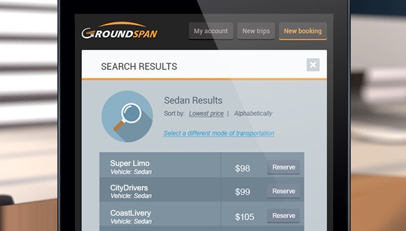
- 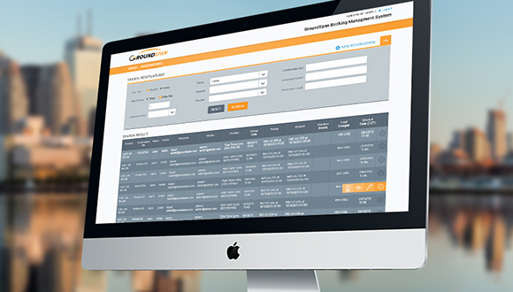
GroundSpan™ is a revolutionary platform uniquely developed to accelerate the automation of ground transportation reservations from Travel Agencies and Corporate Booking Tools.
The newly developed GroundSpan™ platform will bring together agencies, corporate travel departments, corporate travelers and ground transportation companies into a marketplace that is accessible from anywhere and at any time. GroundSpan™ is the missing piece of the puzzle that effectively bridges the gap between corporate travelers and the ground transportation companies into a single portal.
The GroundSpan™ platform is a culmination of features and functionality based on feedback from corporate travel managers, agencies, travelers and ground transportation companies.
Our mission is to continually develop automation technologies and systems "for the industry, by the industry, for the benefit of the industry".- Openening up new channels for business - GroundSpan™ works with all major GDS, agencies and corporate online booking tools
- Gain access to new busines opportunities
- Makes existing business more efficient and less expensive
- Reduces your costs per booking over phone calls competition
- Empowers vendors brand; not looking to complete
- Integrated in most back office system
- Minimizes billing disputes and inputting errors caused by manual entry
- Achieve global visibility with no marketing cost resulting in greater penetration within existing relationships
Our innovative products and services have been developed in partnership with travel industry leaders, ground transportation industry and our Corporate Customers.
We continually solicit feedback from Corporations, Travel agents, Corporate Travelers, and ground vendors, resulting in a booking experience that is more seamless than ever before.
If you are interested in learning more or seeing any of our products in action, please contact our sales team info@groundspan.com for solutions tailored to your specific needs.The recently developed GroundSpan™ platform will bring together agencies, corporate travel departments, corporate travelers and their suppliers into a marketplace that will be accessible from anywhere and at any time.
GroundSpan™ will effectively bridge the gap between corporate travelers and suppliers into a single portal for booking, expense reporting and spend management reporting.Technical Requirements:
The GroundSpan™ Booking Tool was built in C# for Microsoft.NET 4.7.
The tool is small in size and requires little system resources to operate (main .exe and non-system related supporting libraries are 832 kb).
Like all .Net applications, the tool requires the .Net 4.7 runtime (already installed in Windows XP SP2 and beyond.)
System Requirements:
GroundSpan™ Booking Tool RAM consumption while in operation : 100k at most applicate space requirements: 1.5 MB .Net 4.7 Disk space requirements: 280 MB (x86), 610 MB (x64) Internet - Will run on any Internet accessible computer, but for the best performance we recommend a broadband Internet connection -
Customer Reservations App Integrated with Your BackOffice
Our Customer Mobile app integrates with your back office system to provide end users with a quick and easy to way to book ground transportation. Use your own corporate branding with GroundApp which can be downloaded via the iOS App Store or Google Android Store. With the GroundApp installed, customers can book and edit their reservations; locate, track, and contact their chauffeur in real time; obtain receipts, or view ride history from past reservations. In addition, users can update their payment information and maintain their frequently used pickup and dropoff locations. GroundApp is a polished customer facing app that will increase the authenticity of your marketing presence.
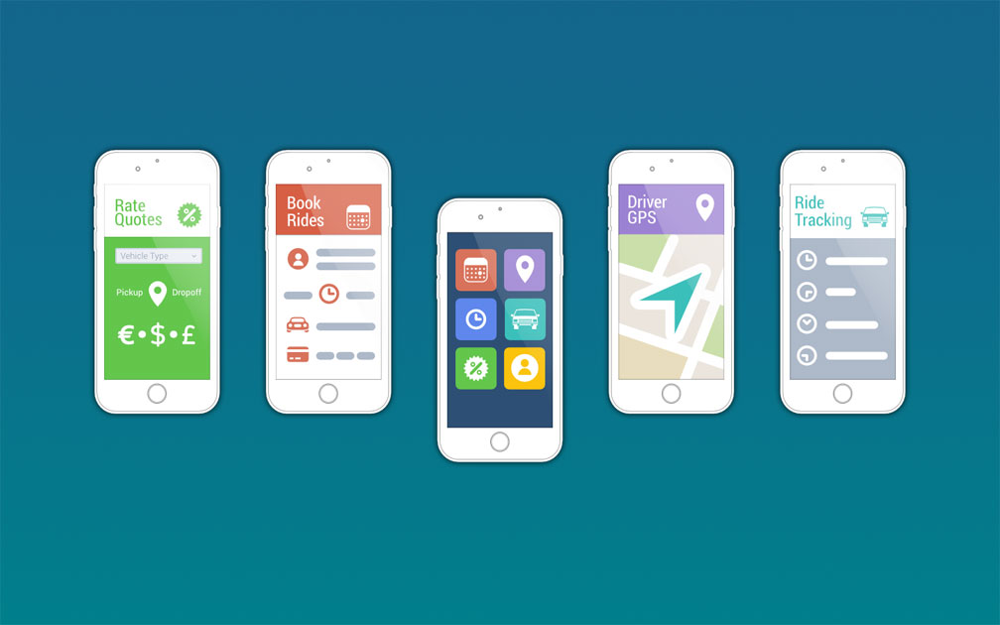- 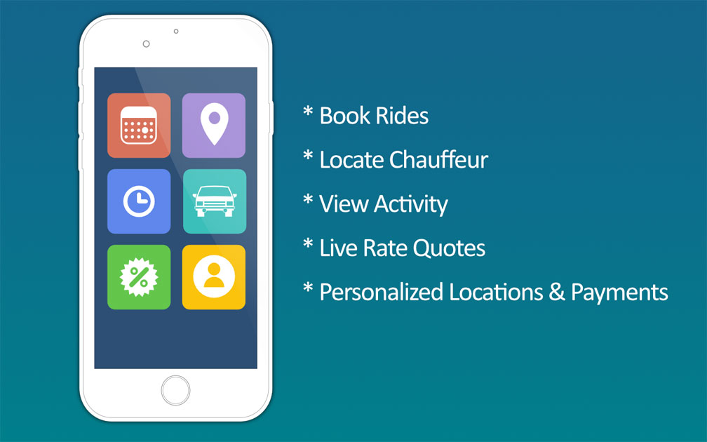
- 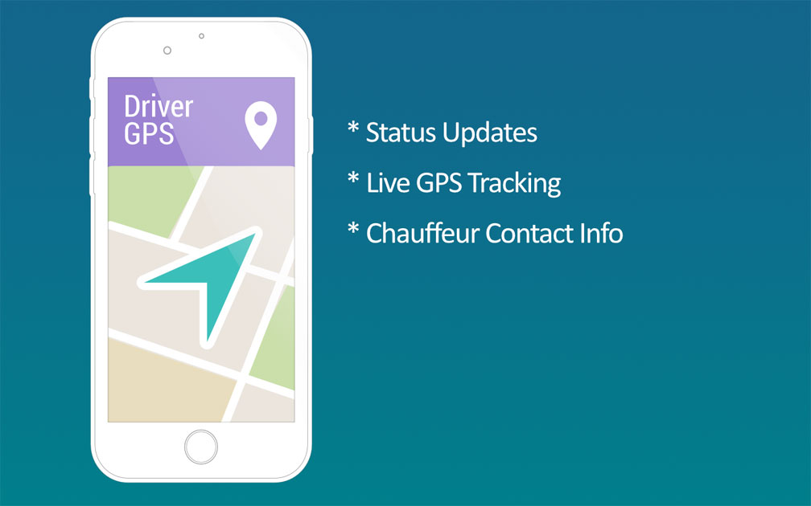
Downloadable PDFGround transportation companies are seeking ways to protect their customer base from unmanaged and uncompliant rideshare providers by seeking to quickly deploy their own mobile branded app with the same features that can also work with their backoffice system.
Providing an easy to use booking app that allows customers to manage their reservations directly with your backoffice system allows a ground transportation company to offer a level of service that far exceeds that of rideshare. Not only will ground transportation companies satisfy the corporate standards of policy compliance and safety, the integration with your backoffice suite provides a wealth of additional information that greatly improves customer service.
A mobile app for customers to book reservations directly into your backoffice increases bookings from customers and increases customer loyalty. Customers are able to see your driver location, communicate with drivers, see pricing information, see their reservation history, obtain ride receipts, and completely manage their reservations. This wealth of information lets your company evolve the level of quality service to your individual customers in ways no other rideshare program could.Generate More Reservations - A user friendly app that performs well and is easy to use is crucial in today's world. Customers demand the most reliable applications on their most personal devices which is why GroundApp focuses on providing a great experience booking and managing rides. We designed GroundApp to let customer book rides in under 30 seconds. With a polished quality app that allows customers to book rides quickly, customers will always return to book more trips and engage your business as a loyal customer.
Reduce Support Calls - GroundApp provides the right information to the customers on their mobile device, reducing the need to contact your offices. We made Rate Quotes available so that they don't have to call you to get prices on rides. We provide the end user with a picture of the driver for improved passenger safety with the option to contact them any time before the trip. Customers can update their payment information, add location data, or find out more about past rides. Our mobile app will significantly lower the number of times customers call you about common questions they may have about their rides.
Provides a Competitive Edge - With a low implementation fee to integrate with your back office, your operations will be ready to position itself as a trustworthy ground transportation provider with a polished mobile app for customers to rely on. This level of automation guarantees improvement in how you manage your customer service experience.
- App will generate additional reservations
- Reduces the number of phone calls to your call center
- Improves customer service and satisfaction
- Enhances your competitive edge
- Increases your marketing presence
GroundApp™ allows your customers to:- Book, edit or cancel a reservation
- Locate, track or contact my chauffeur
- View past reservations and obtain receipts
- Get a rate quote
- Update location information
- Update payment information
GroundApp™ provides end-users with a quick and easy way to book ground transportation through a simple mobile application from any geographic area, worldwide. Your branded app can be downloaded quickly from the App Store or Google. Once downloaded your branded app with logo is placed on the mobile devices home screen, allowing quick and easy access.Server Configuration:- Processor: Intel Xeon Processor E7-4850 v4 (Quad Core) 3.2 GHz or Higher
- Memory: 16 GB RAM
- Storage: 2 x 200GB or Higher, 15K RPM Drivers for Operating System in RAID 1 (SATA Not Recommended)
- Network: 2 x 1GB Network Adapters with 2 NIC Teaming Required
Mobile Devices:- Apple iPhone or iPad
- Android Smartphone or Tablet
-
BackOffice Affiliate Network
Our affiliate network platform offers bidirectional integration with a growing list of leading back office systems. This solution allows ground transportation operators to submit and receive reservation data with the vast number of connected affiliates from around the world. All the data is transmitted dynamically using secure encryption channels so that status alerts, ride updates, and customer notifications can trigger instantly from affiliate to affiliate. This automation extends into the ride closeout process which is able to send trip cost information so that customers can be billed in the most expedient way possible. All features integrate directly through your backoffice system.
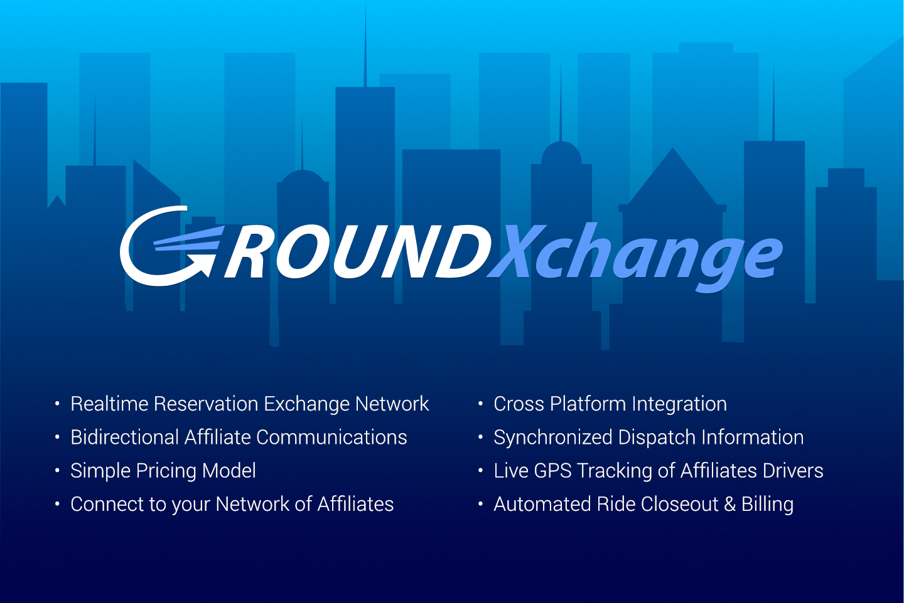Ground Transportation companies are looking to leverage a global distribution system where they can build their own network of affiliates to transact business electronically and in real-time.
GroundXchange, a revolutionary platform uniquely developed to accelerate the automation of ground transportation bookings, status updates, and ride closeout information. The innovatively designed GroundXchange network cohesively integrates reservations, dispatch status and ride closeout data into a single ecosystem. GroundXchange will effectively bridge the gap between affiliates located around the world into a single solution.
Companies that have implemented GroundXchange have seen an increase of bookings from their corporate customers, less leakage from their affiliate partner, improved change & cancellation communications, and lower order entry costs.Benefits to Your Customers - When your backoffice is integrated through a system like GroundXchange, your customers will receive confirmation of their reservation status sooner, more consistently, and on time with less errors. Customers will quickly see pricing details as these calculations take place through the GroundXchange integration between affiliates. The value of this integration is even greater if your backoffice uses a mobile app for customers to interact with which then allow your customers to see driver related data as it seamlessly connects between affiliate backoffices. This level of convenience provides huge benefits to companies that are seeking innovative ways to increase in customers and transactions.
Benefits to Your Dispatch - Using GroundXchange lets fleet managers track the rides performed by your affiliates with greater accuracy by having notifications and status updates on farmed out reservations available in real time. Affiliates on GroundXchange receive real time GPS location data of the drivers performing the trip providing an unprecedented level of affiliate networking.
Benefits to Your Operations - Operators on GroundXchange experience a boost in transactions due to an intelligent integration that is consistently being upgraded to turbo charge the process of affiliates handling customer bookings in the most efficient way possible while allowing you to track every detail every step of the way. This level of efficiency increases the confidence of providers to improve their affiliate relationships and thrive with their customers thanks to their integration with the GroundXchange network.
-
Managed IT Services
Dedicated Technical Support Services for IT Infrastructure
GroundWidgets has made the commitment to its partners and users to meet their needs when it comes to securing and backing up "mission critical" data by now providing a full suite of IT services. Our staff of Certified IT professionals will deploy, encrypt, monitor, and backup your network infrastructure using the latest tools and strategies to ensure your network and are always protected. Our DataCenters are monitored 24/7 by our engineers with available support on call by phone, email or chat.
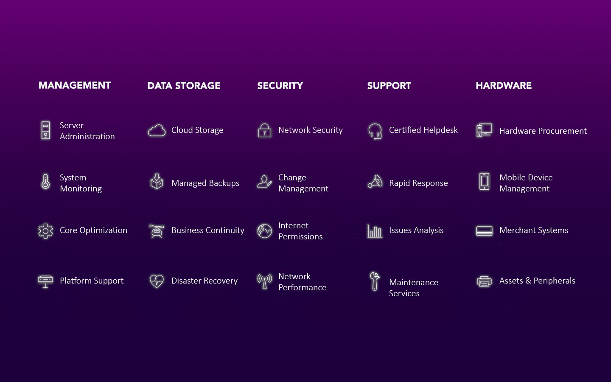IT Infrastructure is a huge expense to the operations of a ground transportation company. There are additional concerns, such as security, disaster recovery, and reliability that adds additional risks and costs to a company’s bottom line and peace of mind.
Companies that partner with vendors that also support their IT save more money in the long term because they allow the subject matter experts to also maintain the backbone of the system’s performance, security, and data integrity.
The companies that hire IT experts and implement network monitoring tools and strategies will reduce the number of issues they encounter.Backup Solutions - Daily backups of database and operations network to cloud data centers. Backup systems are monitored through intelligent custom services that ensure complete disaster recovery. We use tools that implement the highest level of encryption standards including dual-key customer empowered authentication to ensure only you can ever have access to your data.
IT Support - Our technicians are certified to handle all of your IT needs. We are committed to building a reputable IT Management team that will handle your needs with the greatest level of customer care and satisfaction. We use audit trail tracking to be able to report to you all activity by our IT services whether manual or automatic.
Network Configuration - We offer expert services with Firewall and VPN configurations fully securing your network IT. We provide service notifications and automatic software updates to keep your systems up to date. We implement security protocol to prevent users from unauthorized use, complete software licensing for SQL, Operating System, and Remote Servers.
- Hosting Services
- Cloud Data Backup Services
- Redundancy and Continuation Setup
- PCI Compliance Verification
- Website Development
- VOIP Telephony Integrations
-
Integrated BackOffice Credit Card Processor
GroundWidgets delivers beyond your expectations by offering a merchant processing solution designed for ground transportation providers. GroundMerchant integrates with your backoffice and through our partnership with leading merchant processors your business benefits from negotiated discounts of 20-40% savings on credit card processing fees.
Ground Transportation companies that do high volume credit card processing are seeking ways to reduce their merchant fees to lower operating costs.
With a merchant processing solution designed specifically for ground transportation companies, service providers can save time reconciling, refunding and voiding trips while saving money by taking advantage of industry tailored services and low rates.
Companies that fully integrate the GroundMerchant's solution on average save 20-40% off their existing merchant rates. They also have a 1% lower fee on all level 2/3 transactions saving them time and money.Fully Standardized - GroundMerchant takes all major credit cards and is tailored right out of the box to work for ground transportation companies with minimal setup time. The GroundMerchant solution is PCI Compliant and includes Level 2 & 3 Data integration.
Save Money - GroundWidgets is proud to facilitate special services such as GroundMerchant to lower your costs. There are no setup or annual fees by signing up with GroundMerchant, and your overall credit card processing fees will be lower than what you are paying today.
Easy to Setup Easy to Use Requirements - No Signup Fee
- Next Day Funding Feature
- Credit Card Transaction Reporting
- Connects to many Gateways
- No Annual Fees
- No Equipment Necessary
- Accept Visa, MasterCard, Discover & Amex
- Reduced Credit Card Processing Fees
- Realtime Authorization & Sales
- Certified PCI Compliance
- Level 2 & 3 Data Ready
- Fully Integrates with your BackOffice
- Submit Application
- 2 Months of Credit Card Processing Statements
- Corporate Filing
-
Two Way Voice Communication Mobile App
Before there were mobile smart phones, there was the Nextel Phone with realtime 2 way voice messaging. Dispatchers and drivers loved to use Nextels because communication was instant, there was no need to place a call or type a text message. We built a great mobile app to keep that communication style alive just for when you need to ask a question or have something to say, and just like the old Nextel days, people still love to talk to each other through walkie-talkie style! Our mobile app GroundTalk delivers that experience in an affordable package for all Apple iOS devices. GroundTalk is faster for drivers and dispatchers to communicate and its as easy and safer as the press of a button.
Drivers need a safer way to communicate with Dispatchers that does not require them to type text or browse for canned messages in a mobile app.
Using a mobile device like a Walkie Talkie not only improves direct communications between drivers and dispatchers, but makes the interactions quicker and safer.
With a mobile app that allows dispatchers to quickly send voice messages to a driver or the whole fleet, and allows drivers to quickly respond verbally without placing a phone call or typing text messages, saves time and improves safety for drivers.Using GroundTalk - Walkie Talkie style communication is the closest thing to being face to face. You don't have to place a phone call, you don’t have to type a message but with the press of button you get instant reach between your operations and drivers. GroundTalk runs in the background when not in use so you can still hear inbound messages or can quickly switch to send a reply. If you don't want to hear your messages coming through your speakerphone, you can set inbound messages to appear as notifications.
Messaging Capabilities - Communicate with a single driver or set up a channel and communicate with your entire fleet. Message History is maintained for your all your contacts until they're deleted. Just like voicemail you can reply to previous messages anytime. If a driver is using his mobile device with a bluetooth headset, they can hear GroundTalk and send a reply as they normally would when picking up regular phone calls. This is much safer for your drivers than texting with their dispatch.
Supported Mobile Devices Setup Requirements - iOS iPhones or iPads
- Bluetooth Compatible Headset Optional
- Windows Server 2003 or Newer
- 4GB of Memory
- 120 GB Hard Drive
- IIS 6 or Newer
- SMTP Server for Notifications
Tell us how we can help you?
Our Location
1110, B-Block, Navratna Corporate Park
Bopal - Ambli, AMD GJ 380054
See on the map
Contact Us
Phone: +91-1234567890Support: support@groundopsltd.com
Sales: sales@groundopsltd.com